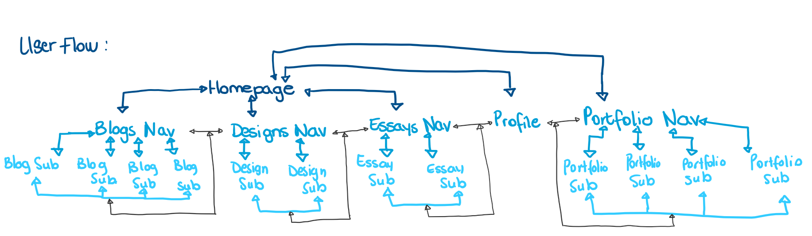

INTERACTION DESIGN

Information Structure:
The information structure and hierarchy of the website is as shown in the image on the left hand side.
Homepage:
The user is met first with the homepage. The homepage is the simplest page with only a heading, navigation, search bar and two draggable objects (potentially images).
The main interface element on this page are the draggable elements. The title and the moveable images are the most important aspect of the homepage, hence
the title being in big font and in the middle of the page, with the images around it. Perhaps to encourage user interaction, one of the images could be placed on top
of the title to encourage the user to move it out the way (this however is something to experiment on when I understand CSS better and can play around with draggable elements.)
Navigation pages:
The user can navigate from the homepage, to various navigation pages namely, the blog nav page, the essay nav page, and the designs nav page.
All these nav pages have the same layout with the same interface elements to keep the website consistent and uniform.
Subpages:
The user can navigate from the nav pages to the various subpages. The interface elements across the subpages are the same.
The subpages also allow the user to navigate to the nav pages, the homepage, and other subpages (within the same navigation category).
Profile:
The profile is the only page that has slightly different interface elements. I reintroduced the draggable elements and made it central
to how the user interacts with the page.
Portfolio:
The portfolio page has the same interface elements as the nav pages, however, I might consider changing the horizontal scroll bar
to be a vertical infinite scroll bar to showcase my portfolio works instead – but at the moment it is the same horizontal scroll bar
as in the navigation pages.
Overall however, the way the infomation is structured has not majorly changed since my first wireframes.
User Flow:
I have carefully considered the 3 click rule as I mapped out the user’s flow and therefore, particularly, between the subpages, there are navigational components allowing the user to access any subpage within the specific category, in addition to allowing the user to access the main pages of any category from the subpages.
For example, if the user wants to navigate to Blog 2 from the homepage the flow is as follows:
Homepage -> Blogs -> Blog 2
If the user wants to navigate from Design 2 to Essay 2 the flow is as follows:
Design 2 -> Essays -> Essay 2
In the last scenario the user was on Blog 1 and wants to go to Blog 4, thus the flow is as follows:
Blog 1 -> Blog 4
In every instance, the user only clicks no more than 3 times to access the page they want
(assuming the user takes the shortest route).
The user’s flow from the navigation pages is also straight forward. The navigation pages (blog nav, essay nav, portfolio nav) allow the user to get an overview of each major section on the website and allow the user to choose which sub section of the section they want to navigate to by using the horizontal scroll bar and clicking the desired subpage.

Style:
Colour
Mostly pastel colours and black and white. The pastel colours to express the “playful nature” of my website, however instead
of bright bold colours, the pastel colours are more soft and relaxing. The black for the font (to keep it simple), and the white in the whitespace.
Font
Arial font is far friendlier and more informal than Times New Roman given the fact that my website name is “The Playground”.
However, it is still readable and legible. Additionally I am debating between a font size 16 and font size 18 for the general text, and for titles and headings font size
28 to font size 34 would be ideal. I am choosing slightly bigger font correspond with the theme of the website - playful, and relaxed
Shape
Round edges around boxes and images to give the website a friendly/gentle appeal.
Space
The whitespace is so that the website does not appear overwhelming. As much as the website is playful, it is still meant to
be simple and relaxing (from the user’s end).